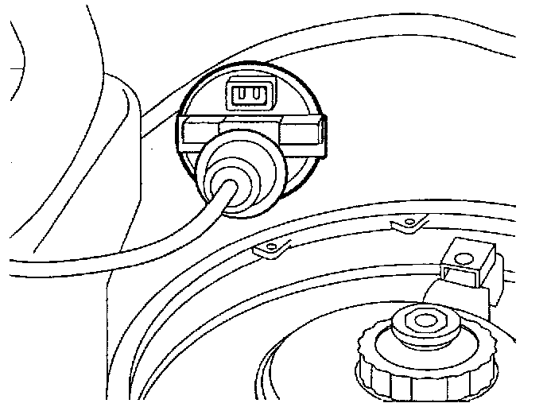

Operation CHARM
: Car repair manuals for everyone.
Home
>>
Volkswagen
>>
1997
>>
GTI (1H1) V6-2.8L (AAA)
>>
Repair and Diagnosis
>>
Transmission and Drivetrain
>>
Automatic Transmission/Transaxle
>>
Sensors and Switches - A/T
>>
Downshift Switch
>>
Locations
Downshift Switch: Locations
F1, F22, F8, F87:
Component Location View
F8:

Component View
F8 kick down switch
-
On Bulkhead Near Brake Booster
-
Integral with accelerator pedal cable
-
Automatic transmission only